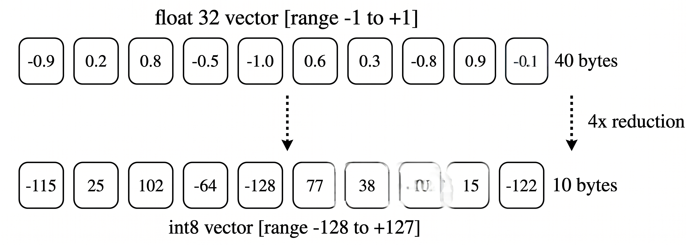
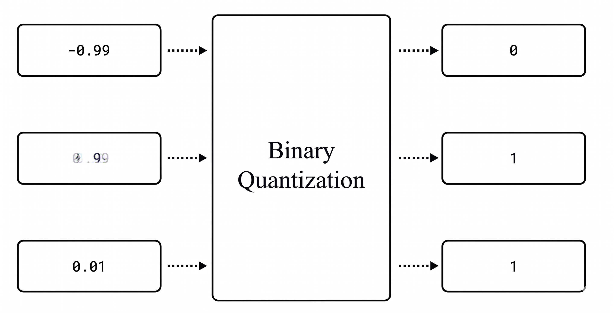
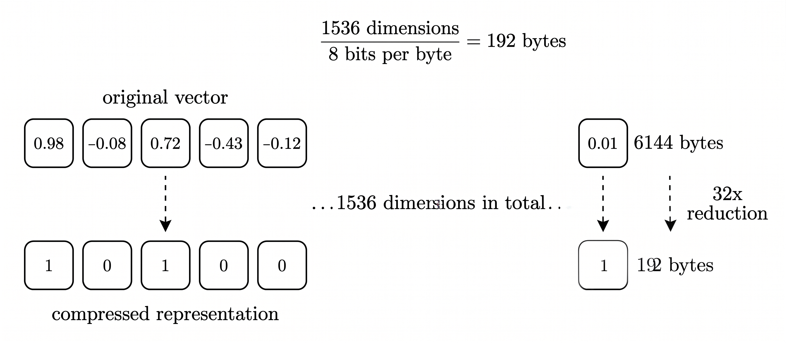
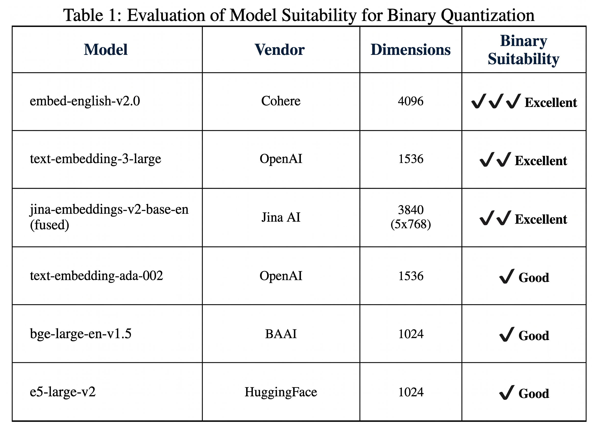
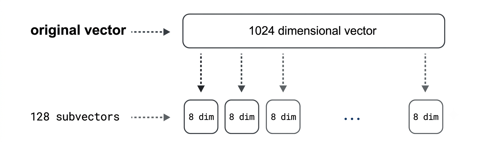
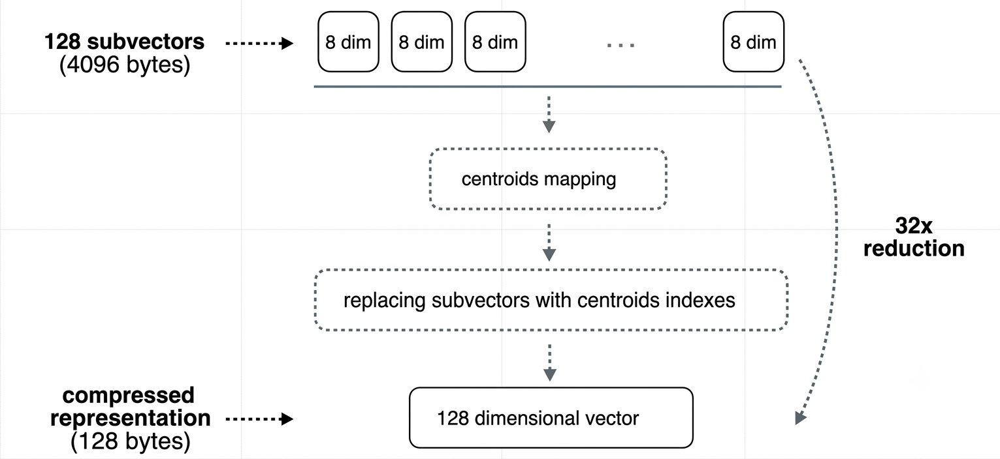
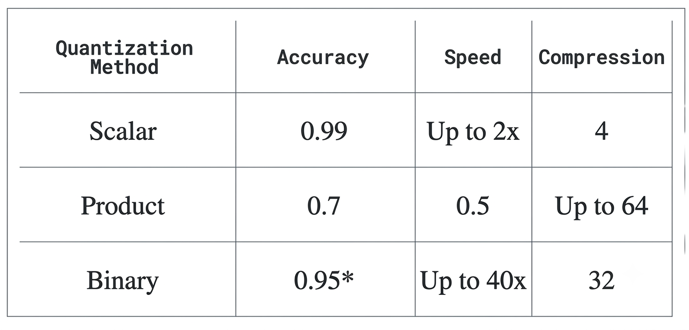

Vector Quantization: How to Shrink Your Vectors Without Losing the Plot
Vectors are great until you have too many of them. The moment your dataset moves from a few thousand embeddings to a few million, things that used to feel free, memory, storage, search speed, suddenly start costing you. And the annoying part is, none of it shows up until you're already deep in production. So let's talk about why this happens, and more importantly, how quantization helps you fix it without wrecking your accuracy in the process.
1. Why Vectors Get So Expensive
Here's the thing about working with real datasets: the number of vectors you need tends to grow fast. Like, really fast. Before you know it, you're sitting on millions of them.
And it's not just about how many vectors you have, it's also about how "big" each one is. Modern embedding models, like the ones from OpenAI, often produce vectors with 1536 dimensions. A single one of those takes up around 6KB of memory. That might sound tiny, but once you reach a million vectors, you're already looking at around 6GB of memory just to hold them.
So as your dataset grows into the millions, your memory and processing needs grow right along with it. And since vectors need to live somewhere fast, usually RAM, so that searches stay quick, the cost of just storing and maintaining all that data starts to climb too.
This is the exact problem that quantization was built to solve.
2. What Is Quantization?
In plain terms, quantization compresses your vectors so they take up less memory, which makes everything run more efficiently. If you're working with a large dataset, vectors can eat up a lot of space, and quantization is basically how you fight back against that.
There's more than one way to do this, but three approaches cover almost every situation you'll run into:
- Scalar quantization
- Binary quantization
- Product quantization
Let's go through each one.
3. The Three Quantization Methods
Each method takes a different approach to compressing your vectors, and each comes with its own trade-offs. Let's break them down one by one.
3.1 Scalar Quantization
Scalar quantization gives you a nice speed boost without giving up much accuracy.
Normally, each dimension in a vector is stored as a float32 value. That's just a fancy way of saying it uses 4 bytes of memory per dimension. Scalar quantization takes those values and squeezes them into a much smaller type called int8.
An int8 only takes up one byte, and it can only represent 256 different values (think a range like [-128 to 127] or [0 to 255]). That one change alone makes a big difference, cutting memory usage by around 75%.

This is a great option if you just want a quick win on search speed without messing with your accuracy too much. As a bonus, it also runs faster on its own, since doing math with int8 values is quicker than doing the same math with float32.
3.2 Binary Quantization
Binary quantization gives you the biggest speed boost you can get, if you're okay trading off a bit of accuracy.
Binary quantization is your go-to if you want to cut memory usage way down and get a massive speed boost at the same time, we're talking up to 40 times faster.

Here's how it works: every value in your vector gets turned into either a 0 or a 1. If a value is greater than zero, it becomes a 1. If it's zero or less, it becomes a 0. For example, -0.99 becomes 0, while both 0.99 and 0.01 become 1.

Out of all the methods here, this one gives you the biggest speed boost without losing too much accuracy. Depending on your dataset and hardware, it can speed up search by up to 40 times.
So with binary quantization, you're not just shrinking your vectors by 32 times, you're also making your searches up to 40 times faster. That's a pretty good deal. However, not every model is equally compatible with binary quantization. Some models experience a greater loss in accuracy when are quantized with binary quantization than others and some models perform really well with binari quantization. So the general recommendation is that you use it with models that have atleast 1,024 dimensions to minimize the accuracy loss that come with it. So these are some of the best models to use binary quantization with.

3.3 Product Quantization
Product quantization is good to know about, but usually not your first pick since it can hurt accuracy quite a bit.
This one isn't usually the go-to recommendation, mainly because it tends to come with a noticeable drop in accuracy. That said, it's still worth understanding, since it might be the right fit depending on what you're building.
The basic idea behind product quantization is to take a big, high-dimensional vector and represent it using a much smaller set of representative points. Here's how that plays out step by step:
- The original vector gets split into smaller pieces, called sub-vectors. Each one covers a different chunk of the original vector.
- This lets the method pick up on different patterns in different parts of your data.
- For each sub-vector, a separate "codebook" gets created. Think of it as a lookup table that maps common patterns to specific regions.
- Each region in that codebook has a centroid, basically a single point that represents everything in that region.


Depending on how you configure it, product quantization can shrink your vectors by 4, 16, 32, or even 64 times. The catch is that the more aggressive you get with compression, the more accuracy you tend to lose compared to scalar or binary quantization.
4. So, Which One Should You Use?
Every method here comes with trade-offs between memory savings, speed, and accuracy. There's no single "best" answer, it really comes down to how much accuracy you're willing to trade for extra speed and storage savings.

One more handy tip: when you turn on quantization, both your original vectors and your quantized ones get stored in RAM by default. If you want to save even more on RAM and lower your overall costs, you can move the original vectors to disk by setting the on-disk parameter to
true.
Picking the right quantization method isn't about finding the "best" one, it's about matching the trade-off to your own situation: how much RAM you've got, how fast your searches need to be, and how much accuracy you can afford to give up.
5. A Quick Note on Accuracy
When we use quantization methods like scalar, binary, or product quantization, we're compressing our vectors to save memory and improve performance. However, this compression can slightly reduce the accuracy of our similarity searches, since the quantized vectors are just approximations of our original data. To help make up for that small loss in accuracy, you can use techniques like oversampling, rescoring, and re-ranking, which can improve the accuracy of your final search results. We'll be covering all of that in the next blog.